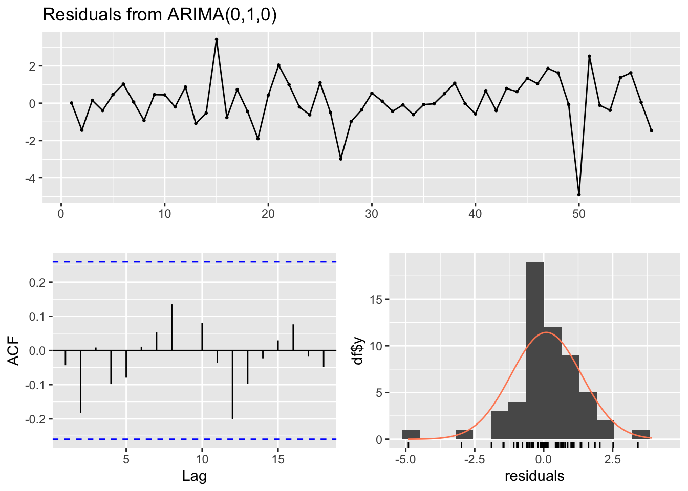
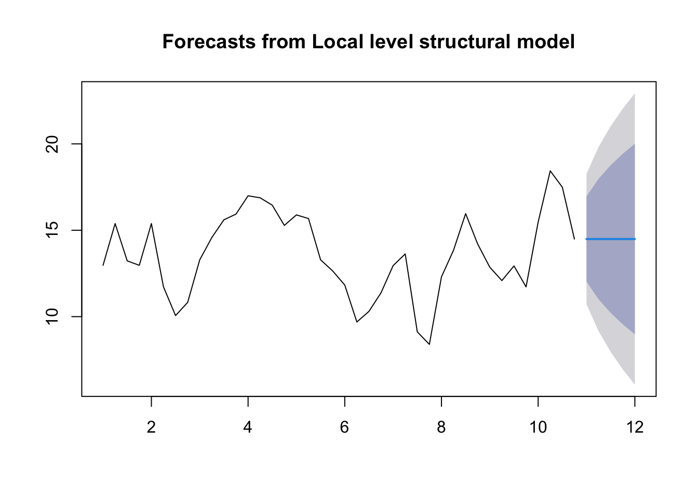
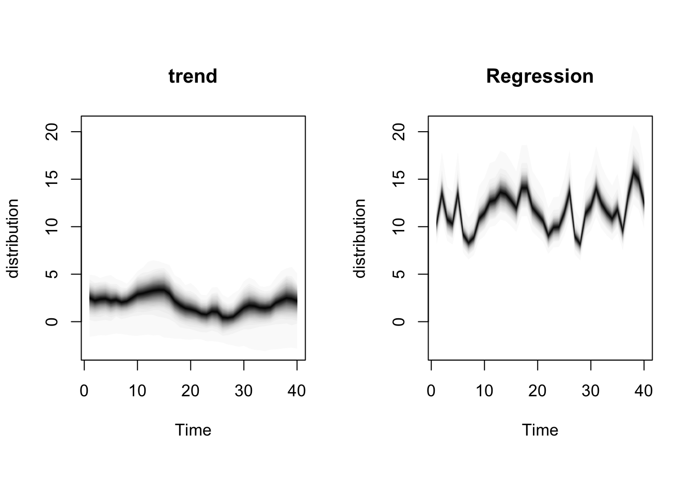
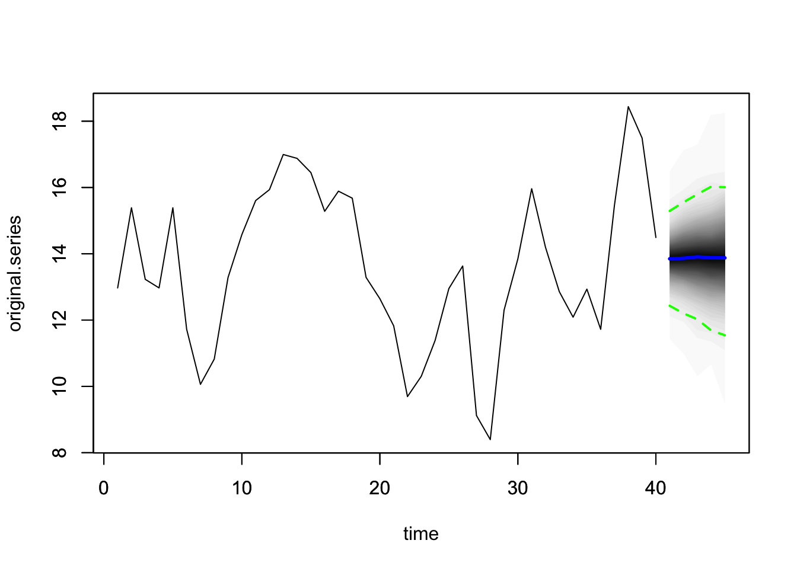

Set 6 Covariates

6.1 Linear Regression
We begin by modeling \(y=\) Quotes as a linear function of \(x=\) TV Spend. That is, we have the following model:
\[\begin{align} y_t = \beta_0 + \beta_1 x_t + e_t, \end{align}\]
where \(e_1, \ldots, e_t\) are mutually independent and each \(e_t \sim \text{N}(0,\sigma^2)\).
| term | estimate | std.error | statistic | p.value |
|---|---|---|---|---|
| (Intercept) | -0.2401883 | 0.9008432 | -0.2666261 | 0.7911986 |
| TVadverts | 1.6934377 | 0.1088208 | 15.5617088 | 0.0000000 |

When we do regressions using time series variables, it is common for the errors (residuals) to have a time series structure. This violates the usual assumption of independent errors made in ordinary least squares regression. The consequence is that the estimates of coefficients and their standard errors will be wrong if the time series structure of the errors is ignored.
6.2 dynlm Linear Model
Another way of fitting a linear model to time series data is using the package dynlm. This package, through its namesake function dynlm, fits the same model as above but is noteworthy for its helpful set of functions related to time. Before showing those, let us fit the same model as above using dynlm.
# option two - time series regression: LM with very useful time functions
y = ts(insurance$Quotes, frequency = 4)
x1 = ts(insurance$TVadverts, frequency = 4)
md = dynlm(y ~ x1 )
summary(md) %>% tidy() %>% kable()| term | estimate | std.error | statistic | p.value |
|---|---|---|---|---|
| (Intercept) | -0.2401883 | 0.9008432 | -0.2666261 | 0.7911986 |
| x1 | 1.6934377 | 0.1088208 | 15.5617088 | 0.0000000 |
The results from this model are identcal to the simple linear regression. The utility of this package comes from the ease with which you can add lagged terms, trends and seasonal factors:
6.3 lm with ARIMA Errors
It is possible to adjust estimated regression coefficients and standard errors when the errors have an ARIMA structure. The purpose is to adjust “ordinary” regression estimates for the fact that the residuals have an ARIMA structure.
In this case, the model is written as,
\[\begin{align} y_t &= \beta_0 + \beta_1 x_t + \eta_t \\ \eta_t &= \phi_1 \eta_{t-1} + \dots + \phi_p \eta_{t-p} + w_t + \theta_1 w_{t-1} + \dots + \theta_q w_{t-q}, \end{align}\]
where \(w_t \sim N(0, \sigma^2)\) are white noise. This model can be fit within auto.arima or Arima.
# option three - time series with ARIMA errors
linmod2 = auto.arima(insurance$Quotes, xreg = as.matrix(insurance$TVadverts))
summary(linmod2)## Series: insurance$Quotes
## Regression with ARIMA(0,1,0) errors
##
## Coefficients:
## xreg
## 1.3485
## s.e. 0.0666
##
## sigma^2 = 0.3301: log likelihood = -33.22
## AIC=70.44 AICc=70.77 BIC=73.77
##
## Training set error measures:
## ME RMSE MAE MPE MAPE MASE
## Training set -0.01299736 0.5599955 0.4354811 -0.09980506 3.271638 0.2767685
## ACF1
## Training set 0.1664547
##
## Ljung-Box test
##
## data: Residuals from ARIMA(0,1,0)
## Q* = 5.0746, df = 10, p-value = 0.8861
##
## Model df: 0. Total lags used: 106.4 State Space Model
6.4.1 Framework
An alternate framework for time series modeling is the state space model. These models are based on a decomposition of the series into a number of components, each of which may be accompanied by error terms (and thus, uncertainty). The simplest model is the local level model. In this model,
\[\begin{align} y_t &= \mu_t + \epsilon_t \\ \mu_t &= \mu_{t-1} + \tau_t. \end{align}\]
The idea of this model is that the observations \(y\) consist of noisy measurements (observation error) of an underlying random walk.
What is the estimate for \(\mu_t\) when \(\tau_t = 0\)? How about when \(\epsilon_t = 0\)? How does this relate to simple exponential smoothing?

6.4.2 Specific Problem
For our problem, we will introduce the covariate into the measurement equation. Our model is,
\[\begin{align} y_t &= \mu_t + \beta x_t + \epsilon_t \\ \mu_t = \mu_{t-1} + \eta_t. \end{align}\]
We will use the package bsts to fit this model. The first thing to do when specifying a bsts package is the specify the contents of the latent state vector \(\mu_t\)
## =-=-=-=-= Iteration 0 Tue Feb 20 18:52:00 2024 =-=-=-=-=
## =-=-=-=-= Iteration 100 Tue Feb 20 18:52:00 2024 =-=-=-=-=
## =-=-=-=-= Iteration 200 Tue Feb 20 18:52:00 2024 =-=-=-=-=
## =-=-=-=-= Iteration 300 Tue Feb 20 18:52:00 2024 =-=-=-=-=
## =-=-=-=-= Iteration 400 Tue Feb 20 18:52:00 2024 =-=-=-=-=
## =-=-=-=-= Iteration 500 Tue Feb 20 18:52:00 2024 =-=-=-=-=
## =-=-=-=-= Iteration 600 Tue Feb 20 18:52:00 2024 =-=-=-=-=
## =-=-=-=-= Iteration 700 Tue Feb 20 18:52:00 2024 =-=-=-=-=
## =-=-=-=-= Iteration 800 Tue Feb 20 18:52:00 2024 =-=-=-=-=
## =-=-=-=-= Iteration 900 Tue Feb 20 18:52:00 2024 =-=-=-=-=